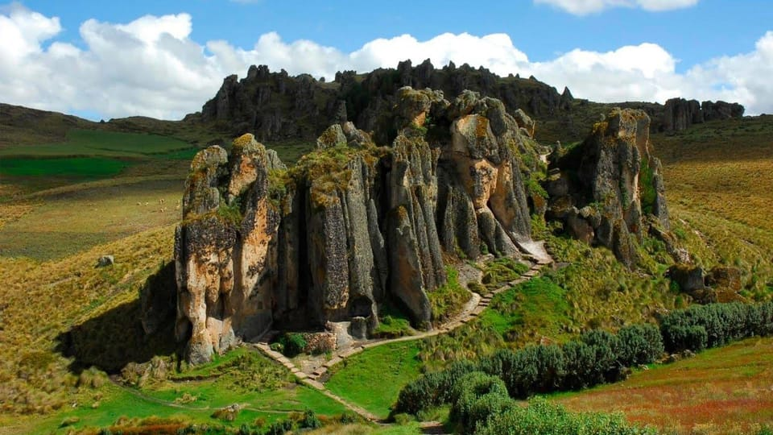

Principales Atracciones
| Sitio | Ubicación | Descripción |
|---|---|---|
| Cuarto del Rescate | Centro histórico | Último refugio del Inca Atahualpa antes de su captura por los españoles. |
| Cumbemayo | A 20 km de Cajamarca | Sitio arqueológico con un antiguo canal de piedra preincaico y formaciones rocosas llamadas “frailones”. Ideal para senderismo y exploración. |
| Baños del Inca | 6 km de la ciudad | Aguas termales utilizadas desde la época incaica con propiedades terapéuticas. |
Detalles de los Sitios Turísticos

Cuarto del Rescate
Fue el último refugio del Inca Atahualpa antes de ser ejecutado por los conquistadores españoles. Según la historia, Atahualpa ofreció llenar este cuarto de oro y dos más de plata a cambio de su liberación.

Cumbemayo
Alberga un acueducto tallado en piedra que data de unos 1,000 años a.C. y que servía para transportar agua desde la parte alta de la montaña a zonas agrícolas más bajas.

Baños del Inca
Son aguas termales naturales que los incas, y especialmente el Inca Atahualpa, utilizaban para relajarse y curarse. Eran parte de su sistema de bienestar físico y espiritual.
Información Relevante
Cosas para hacer:
- Visitar mercados artesanales.
- Disfrutar de la gastronomía local.
- Participar en festivales culturales.
- Explorar senderos naturales.
Mejor época para visitar:
- Junio - Agosto (temporada seca / invierno andino) - Visitas culturales e históricas con clima fresco y cielos despejados, ideal para caminar por el centro histórico sin lluvias.
- Julio - Septiembre (temporada seca con días soleados) - Senderismo, fotografía y exploración arqueológica. El clima seco y las vistas despejadas permiten recorrer el canal y las formaciones rocosas con mayor comodidad y seguridad.
- Marzo - Octubre (época templada y seca) - Relajarse en aguas termales durante días frescos o nublados. Excelente para actividades de bienestar y descanso familiar.